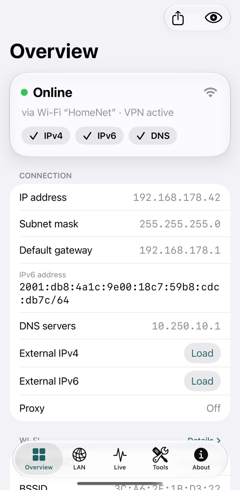
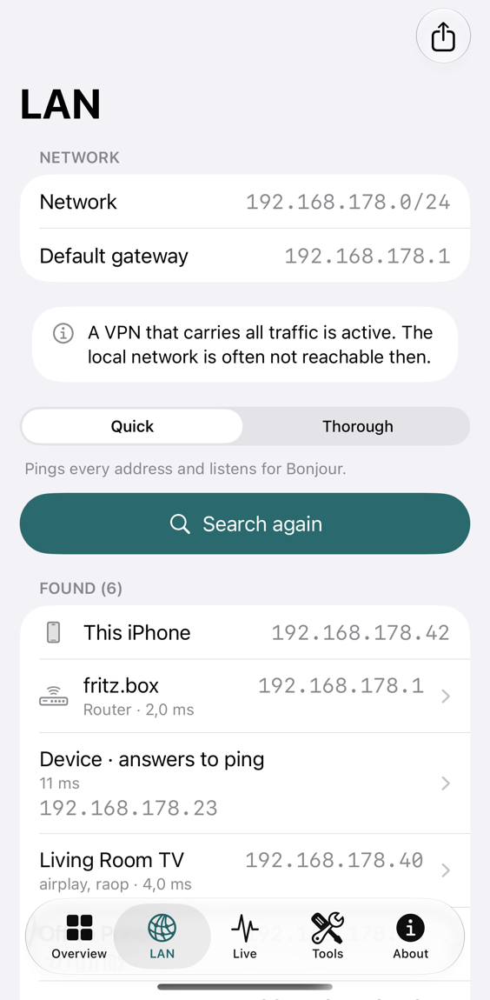
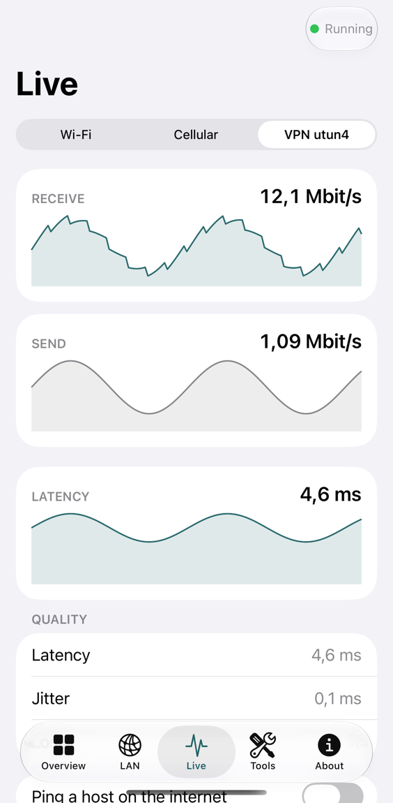
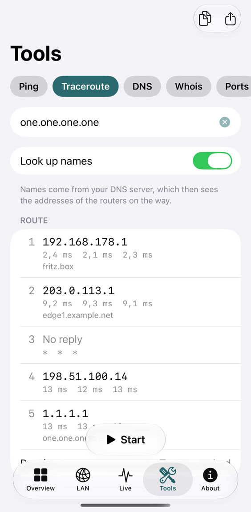

Pingscape
Network & Ping for iPhone. See your connection clearly: Wi-Fi, cellular, VPN, DNS and the devices on your network.
A free, open-source app that shows as much network information as iOS allows. It only displays: it changes nothing on your device or network. No account, no ads, no tracking, no server of ours.




The screenshots show demo data, not a real network.
What it shows
Overview
Online status, IP address, subnet mask, gateway, DNS, proxy and, if you allow it, your public IP address and provider.
Wi-Fi
Network name, BSSID, vendor, security, addresses and the latency to your router.
VPN and tunnels
Whether a VPN is active, its address and MTU, and whether all traffic or only part of it goes through.
Cellular
Radio technology per SIM, the address of the mobile connection and data counters.
LAN
A ping sweep and Bonjour list the devices on your network, with their services.
Live
Throughput, latency, jitter and loss as they happen, and a timeline of network changes.
Tools
Ping, traceroute, DNS, whois and RDAP, ports, TLS certificate, HTTP timing, subnet calculator, vendor lookup.
Shortcuts and widget
Ask for the network status or a VPN check in Shortcuts and Siri. A widget shows the state and the time it was read.
How it is built
- Only real data. Pingscape shows what iOS actually delivers. Nothing is guessed, and a value that is missing is simply not shown.
- Private by default. Everything runs on your device. Requests to the internet happen only when you allow or start them, and the privacy page lists every one of them.
- Public Apple APIs only, no third-party libraries, no analytics.
- Open source under the MIT License. Read the code, build it yourself, or send a fix.
- English and German. Works on every iPhone and on iPad, in light and dark mode and with large text.
Questions
See Support for answers and for how to report a problem.